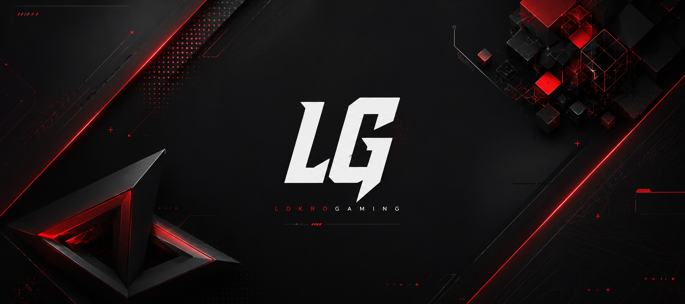

Lokrogamer
Streamer | Developer

Home
Timeline
-
Lokro created his first website on Mimo
A school friend showed him Mimo and from then on, he couldn't stop learning and creating new sites
Mimo -
His first website went online, hosted on GitHub under the Name "Lokrogamer".
He copied the code from Mimo and deployed it on GitHub. An old Version is still available. Click on the button to take a look!
GitHub repo Website -
lokrogaming.github.io went online
Users were now able to view the site on https://lokrogaming.github.io instead on lokrogaming.github.io/Lokrogamer it's funny because actually you are on lokrogaming.github.io...
-
lokrogames was created. Lokro's first and til today the most popular website
In december 2025 created, LokroGames is til today with over 4k views Lokro's most viewed website!
LokroGames -
LGG was founded in january 2026 and has over 3k views
At first it looked like LGG was a total disaster because nobody wanted to use it, but in April 2026 everything changed. It gained many servers and users and is till today 100% free
LGG -
Sec-Chat was created by Lokro
Lokro wanted his very own messenger service. He decided to use AES256-GCM because it is for his purposes the most efficient encryption algorythmh
Sec-Chat -
Lokrogaming.github.io changed to lokro.dev
From then on, lokrogaming.github.io changed to lokro.dev. It is still hosted with GitHub. Only the domain had changed.
Timeline
Projects
LokroGang
Click me
LokroGames
Click me
Sec-Chat
Click me
LokroMAIL
Click me
Projects
Made with by Lokro